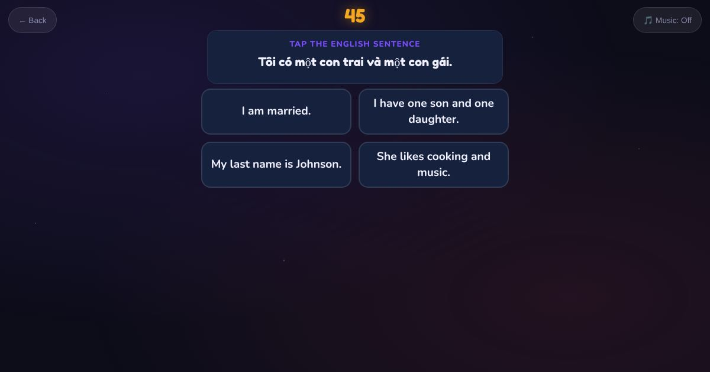

For teachers and tutors
About Test Yourself: Translation
An adaptive translation check in Arabic, Burmese, Chinese, Dari, Hindi, Khmer, Pashto, Persian, Thai, Urdu or Vietnamese. The learner reads a sentence in their language and writes or chooses the English.

How to play
- Choose your language.
- Answer each round.
- See your results.
Play it as a class
Students take it on their own phones, each in their own language.